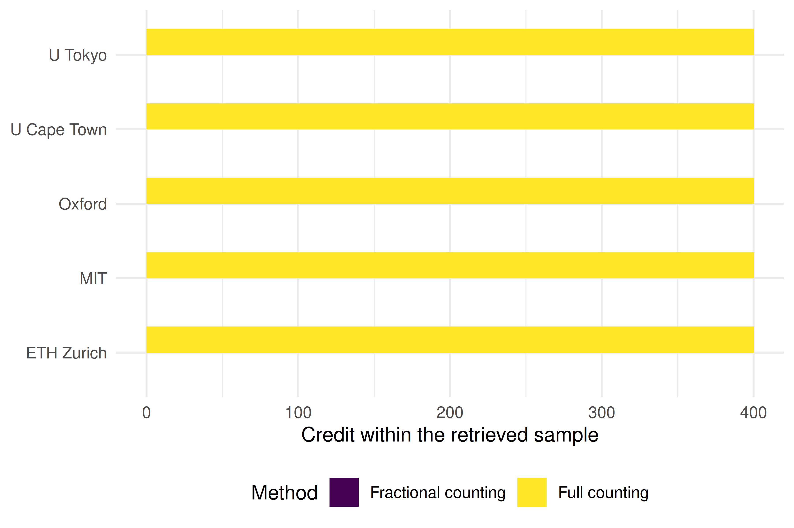
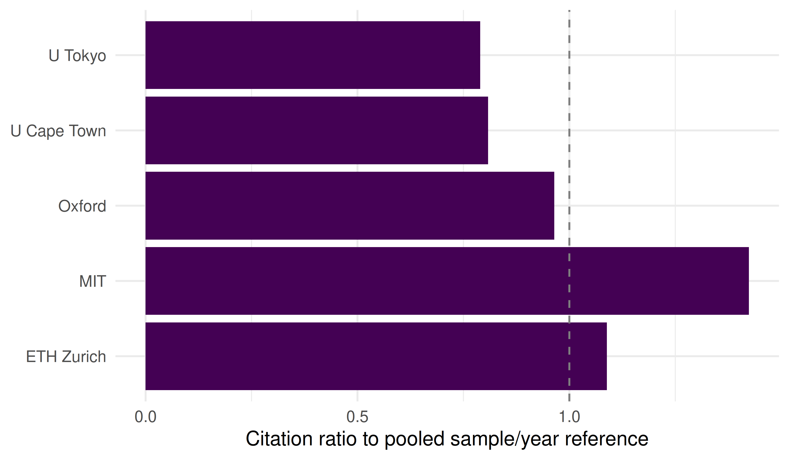

13 Institutional and Country Analysis
13.1 Learning objectives
After completing this chapter, you will be able to:
- Aggregate bibliometric data at institutional and country levels using OpenAlex
- Explain the difference between full counting and fractional counting and when each is appropriate
- Use ROR (Research Organization Registry) identifiers for reliable institutional matching
- Compute descriptive citation summaries and a shared sample/year citation ratio, while explaining why it is not MNCS
- Interpret institutional rankings critically, accounting for size, field mix, and counting method
13.3 Conceptual background
Comparing research performance across institutions and countries is one of the most common — and most contentious — applications of bibliometrics. University rankings, national R&D assessments, and funding allocation decisions all rely on aggregate bibliometric statistics. Getting the aggregation right matters enormously.
The fundamental choice is between full counting and fractional counting. Under full counting, each institution listed on a paper receives one full credit for that paper. A paper with authors from five institutions thus generates five institutional publications. Under fractional counting, credit is divided: each institution receives 1/5 of a publication count. Full counting inflates the output of institutions that frequently collaborate, while this fractional rule divides bibliometric credit equally among the listed institutions; it does not measure their actual contribution (Glänzel and Schubert 2004; Waltman et al. 2011).
ROR (Research Organization Registry) identifiers provide a stable, open system for identifying institutions, analogous to DOIs for publications and ORCID for researchers. OpenAlex maps institutional affiliations to ROR IDs, though coverage varies by discipline and geography. Using ROR avoids the pitfalls of string matching on institution names, which are notoriously inconsistent (e.g., “MIT”, “Massachusetts Institute of Technology”, “Mass. Inst. Tech.”).
Size-independent indicators are essential for fair comparison. Raw publication counts favour large universities. The Mean Normalised Citation Score (MNCS) (Waltman et al. 2011) and PP(top 10%) — the proportion of papers in the top 10% most cited in their field and year — are designed to account for differences in reference sets. Their interpretation still depends on reference-set construction, coverage, attribution and the citation window. The Leiden Ranking uses these indicators with fractional counting as its default, offering a model of responsible institutional benchmarking.
Country-level analysis faces the same choices. Additionally, linguistic bias in databases means that countries where English is not the primary research language may appear less productive than they truly are (Visser et al. 2021).
13.4 Worked example
13.4.1 Selecting institutions
We use five institutions to demonstrate summaries of equally capped samples. The identifiers below are OpenAlex institution IDs, not ROR IDs. Their names, countries and ROR mappings were checked against the OpenAlex institution records on 30 October 2026. Subsidiary coverage still needs checking before an actual assessment.
institutions <- tribble(
~short_name, ~openalex_id,
"MIT", "I63966007",
"Oxford", "I40120149",
"ETH Zurich", "I35440088",
"U Tokyo", "I74801974",
"U Cape Town", "I157614274"
)13.4.2 Fetching institutional publications
fetch_inst_works <- function(inst_id) {
res <- fetch_openalex(
entity = "works",
authorships.institutions.id = inst_id,
from_publication_date = "2020-01-01",
to_publication_date = "2022-12-31",
type = "article",
options = list(sample = 400, seed = 42)
)
if (!is.data.frame(res) || !nrow(res)) {
stop(glue("No usable works returned for {inst_id}; check the request before comparing institutions."))
}
res
}
inst_data <- institutions |>
mutate(works = map(openalex_id, fetch_inst_works))These requests retrieve at most 400 sampled articles per institution from 2020–2022, not each institution’s complete output. Counts below describe the retrieved samples; the cap prevents interpreting them as comparative institutional productivity. Provider failures stop the example rather than removing an institution silently.
13.4.3 Full counting vs. fractional counting
# Equal institutional credit per sampled work: 1 / number of distinct affiliations.
# The helper requires the queried institution to be among those affiliations.
# Incomplete affiliations leave the fractional total missing, with coverage shown.
compute_counts <- sci_institution_sample_counts
counting_comparison <- inst_data |>
mutate(counts = map2(works, openalex_id, compute_counts)) |>
unnest(counts) |>
select(short_name, full_count, affiliation_covered, frac_count) |>
mutate(ratio = round(frac_count / full_count, 2))
counting_comparison |>
gt() |>
cols_label(
short_name = "Institution",
full_count = "Sampled works",
affiliation_covered = "Works with usable affiliations",
frac_count = "Fractional sample credit",
ratio = "Frac / Full"
)| Institution | Sampled works | Works with usable affiliations | Fractional sample credit | Frac / Full |
|---|---|---|---|---|
| MIT | 400 | 352 | NA | NA |
| Oxford | 400 | 333 | NA | NA |
| ETH Zurich | 400 | 353 | NA | NA |
| U Tokyo | 400 | 350 | NA | NA |
| U Cape Town | 400 | 323 | NA | NA |
13.4.5 Visualization
counting_long <- counting_comparison |>
pivot_longer(cols = c(full_count, frac_count),
names_to = "method", values_to = "count") |>
mutate(method = recode(method,
full_count = "Full counting",
frac_count = "Fractional counting"))
ggplot(counting_long, aes(x = count, y = reorder(short_name, count),
fill = method)) +
geom_col(position = "dodge", width = 0.7) +
scale_fill_manual(values = palette_sci(2)) +
labs(x = "Credit within the retrieved sample", y = NULL, fill = "Method") +
theme_sci()
Figure 13.1: Full and fractional institutional credits in the retrieved article samples; these are not institutional output totals.
ggplot(inst_impact, aes(x = pooled_year_ratio, y = short_name)) +
geom_col(fill = palette_sci(1)) +
geom_vline(xintercept = 1, linetype = "dashed", colour = "grey50") +
labs(x = "Citation ratio to pooled sample/year reference", y = NULL) +
theme_sci()
Figure 13.2: Mean citation ratios relative to the shared pooled sample in each publication year. This is not field-normalized MNCS.
13.5 Diagnostics and interpretation
- Sample counts are not size: Capping each sample at 400 articles removes information about institutional output. The full/fractional comparison illustrates counting rules within those samples only.
- Field mix: A medical university will appear more productive (and highly cited) than a social-science institute due to field-level citation norms. True normalisation requires field-level data.
- Sample vs. population: The reference depends on which institutions and works were sampled. For a genuine assessment, define the target population and reference set, document inclusion probabilities, and use uncertainty methods appropriate to that design.
- Fractional/full ratio: With complete affiliations, the ratio summarizes how institutional credit is divided in the retrieved works. Missing affiliations leave the fractional total unavailable; they are not treated as single-institution papers.
13.7 Limitations and responsible use
- Rankings oversimplify. Institutional and country rankings compress a multidimensional reality into a single number. The Leiden Manifesto (Hicks et al. 2015) warns against using rankings mechanically.
- Affiliation data quality. Not all papers have complete or correct institutional affiliations. OpenAlex coverage depends on publisher metadata quality.
- Counting method changes conclusions. The same data can yield different institutional rankings depending on whether full or fractional counting is used. Always report the method.
- Language and geographic bias. Databases undercount research published in non-English languages, disadvantaging countries in Latin America, Asia, and Africa (Visser et al. 2021; Singh et al. 2021).
- Do not compare across fields without normalisation. Raw citation differences can reflect disciplinary citation practices as well as other differences; the sample/year ratio does not remove field mix.
13.9 Common pitfalls
- Using full counting when fractional is more appropriate. Full counting double-credits collaborative work, inflating output for institutions with many international partnerships.
- Ignoring field normalisation. The pooled sample/year ratio adjusts for year only. It must not be relabeled as MNCS or used as a field-adjusted ranking.
- String-matching institution names. Never match institutions by name strings alone. Use ROR or OpenAlex institution IDs.
- Treating samples as populations. If you sampled 400 works per institution, the resulting metrics have uncertainty. Report this.
- Forgetting subsidiary institutions. Large universities may have hospitals, research institutes, or campuses with separate ROR IDs. Decide on the unit of analysis upfront.
13.10 Exercises
Country-level analysis. Aggregate publications by author country (using
authorships.countries) instead of institution. Compute full and fractional counts for the top 10 countries in your corpus. Which countries are most affected by the counting method?Top-decile sample share. Using the same de-duplicated pooled year reference, define a top-decile threshold and an explicit rule for ties. Compute each sample’s share above that threshold. Explain why this is not the field-normalized PP(top 10%) indicator.
Collaboration intensity. Compute the mean number of distinct institutional affiliations per paper for each institution. Is there a relationship between collaboration intensity and the full/fractional count ratio?
13.11 Solutions
Solutions are provided in E.
13.12 Further reading
- Waltman et al. (2011) — MNCS and size-independent indicators for institutional comparison.
- Glänzel and Schubert (2004) — Fractional counting in co-authorship and institutional analysis.
- Hicks et al. (2015) — The Leiden Manifesto on responsible institutional benchmarking.
- Waltman (2016) — Review of citation impact indicators applicable to institutions and countries.
- Visser et al. (2021) — Database coverage comparison; crucial context for country-level analysis.
- Singh et al. (2021) — Journal coverage across databases, highlighting geographic imbalances.
13.13 Session info
#> R version 4.6.1 (2026-06-24)
#> Platform: x86_64-pc-linux-gnu
#> Running under: Ubuntu 24.04.5 LTS
#>
#> Matrix products: default
#> BLAS: /usr/lib/x86_64-linux-gnu/openblas-pthread/libblas.so.3
#> LAPACK: /usr/lib/x86_64-linux-gnu/openblas-pthread/libopenblasp-r0.3.26.so; LAPACK version 3.12.0
#>
#> locale:
#> [1] LC_CTYPE=C.UTF-8 LC_NUMERIC=C LC_TIME=C.UTF-8
#> [4] LC_COLLATE=C.UTF-8 LC_MONETARY=C.UTF-8 LC_MESSAGES=C.UTF-8
#> [7] LC_PAPER=C.UTF-8 LC_NAME=C LC_ADDRESS=C
#> [10] LC_TELEPHONE=C LC_MEASUREMENT=C.UTF-8 LC_IDENTIFICATION=C
#>
#> time zone: UTC
#> tzcode source: system (glibc)
#>
#> attached base packages:
#> [1] stats graphics grDevices utils datasets methods base
#>
#> other attached packages:
#> [1] quanteda_4.5.1 pdftools_3.9.1 arrow_26.0.0 bibliometrix_5.5.0
#> [5] RefManageR_1.4.0 bib2df_1.1.2.0 rcrossref_1.2.1 gt_1.4.0
#> [9] tidytext_0.4.3 glue_1.8.1 openalexR_3.1.2 lubridate_1.9.5
#> [13] forcats_1.0.1 stringr_1.6.0 dplyr_1.2.1 purrr_1.2.2
#> [17] readr_2.2.0 tidyr_1.3.2 tibble_3.3.1 ggplot2_4.0.3
#> [21] tidyverse_2.0.0
#>
#> loaded via a namespace (and not attached):
#> [1] gridExtra_2.3.1 httr2_1.3.0 readxl_1.6.0
#> [4] rlang_1.3.0 magrittr_2.0.5 otel_0.2.0
#> [7] compiler_4.6.1 vctrs_0.7.3 httpcode_0.3.0
#> [10] pkgconfig_2.0.3 fastmap_1.2.0 labeling_0.4.3
#> [13] ca_0.72 utf8_1.2.6 promises_1.5.0
#> [16] rmarkdown_2.32 tzdb_0.5.0 bit_4.6.0
#> [19] xfun_0.62 cachem_1.1.0 jsonlite_2.0.0
#> [22] SnowballC_0.7.1 later_1.4.8 parallel_4.6.1
#> [25] stopwords_2.3 R6_2.6.1 bslib_0.12.0
#> [28] stringi_1.8.9 RColorBrewer_1.1-3 cellranger_1.1.0
#> [31] jquerylib_0.1.4 assertthat_0.2.1 Rcpp_1.1.2
#> [34] bookdown_0.48 knitr_1.52 triebeard_0.4.1
#> [37] base64enc_0.1-6 rentrez_1.2.4 httpuv_1.6.17
#> [40] Matrix_1.7-5 igraph_2.3.4 timechange_0.4.0
#> [43] tidyselect_1.2.1 stringdist_0.9.17 pubmedR_1.0.2
#> [46] rstudioapi_0.19.0 yaml_2.3.12 viridis_0.6.5
#> [49] miniUI_0.1.2 humaniformat_0.6.0 curl_8.1.0
#> [52] qpdf_1.4.1 lattice_0.22-9 plyr_1.8.9
#> [55] shiny_1.14.0 withr_3.0.3 S7_0.2.2
#> [58] askpass_1.2.1 evaluate_1.0.5 zip_3.0.2
#> [61] xml2_1.6.0 shinycssloaders_1.1.0 pillar_1.11.1
#> [64] janeaustenr_1.0.0 DT_0.34.0 plotly_4.12.1
#> [67] generics_0.1.4 rprojroot_2.1.1 hms_1.1.4
#> [70] scales_1.4.0 xtable_1.8-8 contentanalysis_1.1.1
#> [73] tools_4.6.1 data.table_1.18.6.1 tokenizers_0.3.0
#> [76] openxlsx_4.2.9 XML_3.99-0.25 fs_2.1.0
#> [79] visNetwork_2.1.4 fastmatch_1.1-8 grid_4.6.1
#> [82] bibtex_0.5.3 urltools_1.7.3.1 rscopus_0.9.0
#> [85] dimensionsR_0.0.3 bibliometrixData_0.3.0 cli_3.6.6
#> [88] viridisLite_0.4.3 downlit_0.4.5 gtable_0.3.6
#> [91] sass_0.4.10 digest_0.6.39 ggrepel_0.9.8
#> [94] crul_1.6.0 htmlwidgets_1.6.4 farver_2.1.2
#> [97] memoise_2.0.1 htmltools_0.5.9 lifecycle_1.0.5
#> [100] httr_1.4.9 here_1.0.2 mime_0.13
#> [103] bit64_4.8.6